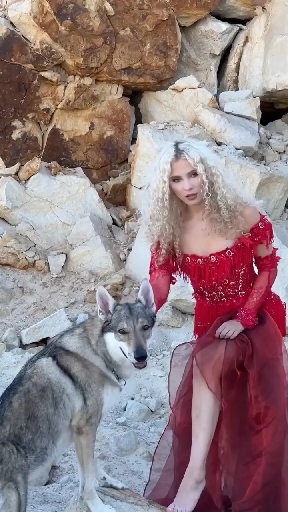
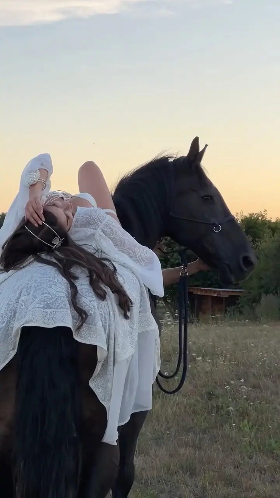

Focení s křídly
Naše srdeční záležitost. Ručně vyrobená křídla ve sněhobílé, růžové, fialové nebo šedé, k tomu líčení a styling v ateliéru a focení v exteriéru. Fotit se můžou i děti.

Fotoateliér, focení s křídly a zvířaty
Jmenujeme se Lenka a Radek a v našem ateliéru v České Lípě fotíme lidi s vlky, sovami, koňmi i s ručně vyrobenými křídly. Radek fotí a drží v rukou světlo, Lenka se stará o všechno ostatní od první domluvy po styling. Nejvíc nás baví chvíle, kdy se člověk a zvíře naladí na stejnou vlnu.
Zeptat se na termín
Naše srdeční záležitost. Ručně vyrobená křídla ve sněhobílé, růžové, fialové nebo šedé, k tomu líčení a styling v ateliéru a focení v exteriéru. Fotit se můžou i děti.
Vedle vás stojí českoslovenští vlčáci, sovy, dravci, krkavec nebo kůň. Fotíme bez spěchu a čekáme na chvíli, kdy se člověk a zvíře naladí na stejnou vlnu.
Boudoir pro nás neznamená odhalit se. Znamená mít odvahu být sama sebou, s jemností, která má sílu.
Jsme tři, kteří tvoří jeden svět jménem Lenory. Radek je ten, kdo fotí. Nezajímá ho jen obraz, ale energie, která se objeví mezi člověkem a zvířetem. Lenka drží všechno pohromadě: komunikaci, organizaci, místa, lidi i projekty. Nově s námi tvoří i Lia, se svým vlastním mladým a odvážným pohledem.
Fotíme v ateliéru v České Lípě a v jejím okolí, v lesích, u vody i ve skalách. Na focení s námi chodí českoslovenští vlčáci Talisman Theos Arqeva a Qinta Arqeva, sovy, dravci, krkavec i koně. Křídla vyrábíme ručně a ke každému focení chystáme líčení, kostýmy a celý koncept.
Spolupracujeme s Miss České republiky, fotíme ale hlavně obyčejné lidi, kteří si chtějí jednou zažít něco neobyčejného. Nefotíme pózy. Čekáme na to, co se nedá vynutit a musí se stát samo. A doma na nás čeká náš kocour Hugo.
Napíšete Lence a společně vybereme typ focení, styl a termín. Ten domlouváme individuálně podle vašich možností.
Sejdeme se v ateliéru v České Lípě. Líčení trvá zhruba hodinu a půl a vybereme k němu kostýmy, doplňky i celý koncept, třeba válečnický, andělský nebo princeznovský.
Pak se přesuneme do okolí České Lípy, kde se k nám přidají zvířata. Fotíme bez spěchu a v přátelské atmosféře, aby vás to bavilo.
Vybrané fotografie dostanete elektronicky, všechny i v černobílé verzi. U focení s křídly je v ceně i tisk ve formátu 13 × 19 cm.
Základ je 4 000 Kč za 8 fotografií elektronicky a tisk 13 × 19 cm, všechny fotky dostanete i černobíle. Každá další fotografie stojí 250 Kč. Fotíme maximálně 2 osoby.
Líčení a česání se platí zvlášť: 400 Kč pro děti a 700 Kč pro dámy. Domluvit se dají i speciální doplňky k líčení a kostýmům.
Focení s křídly pro jednu osobu trvá i s líčením zhruba 3 hodiny, focení s vlky asi tři a půl hodiny. Počítejte s tím, že se nikam nespěchá.
Ano. Přizvat můžeme sovy, havrana, vlky nebo vlkodava, za příplatek od 600 do 800 Kč.